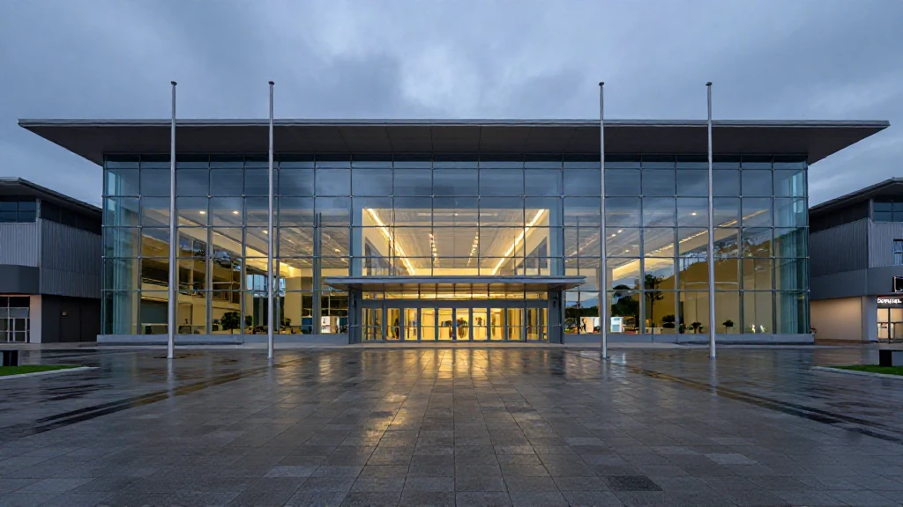
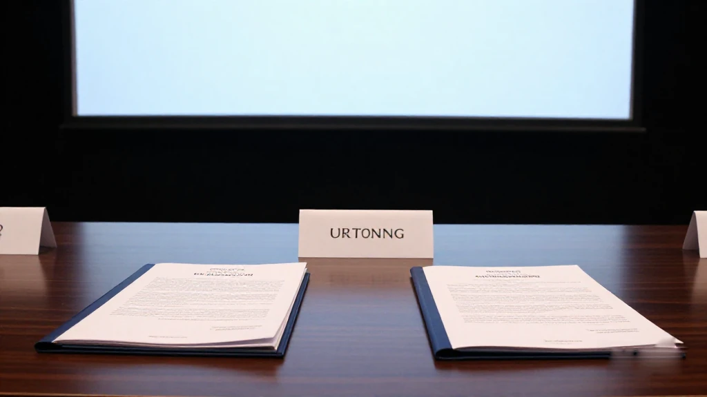
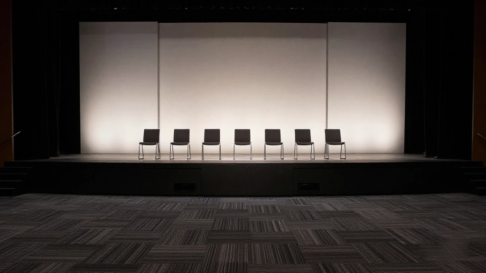
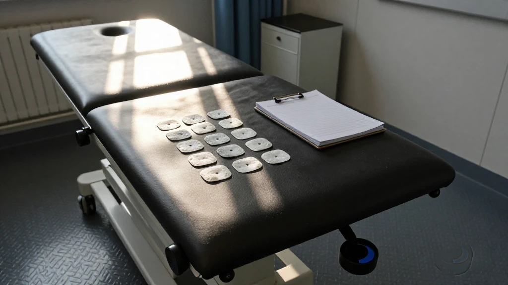
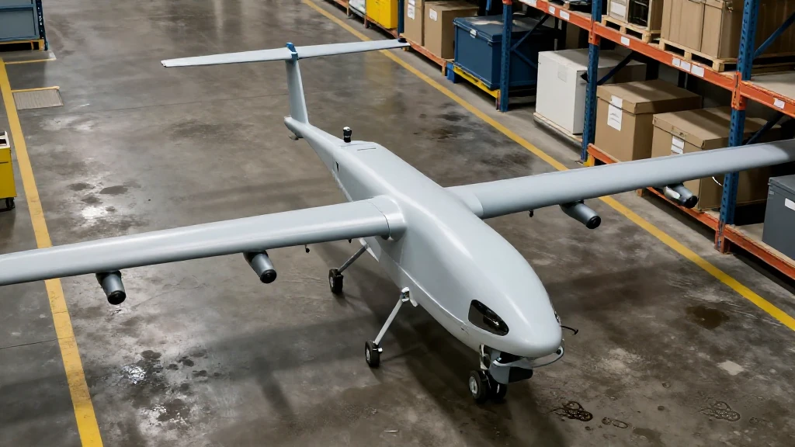
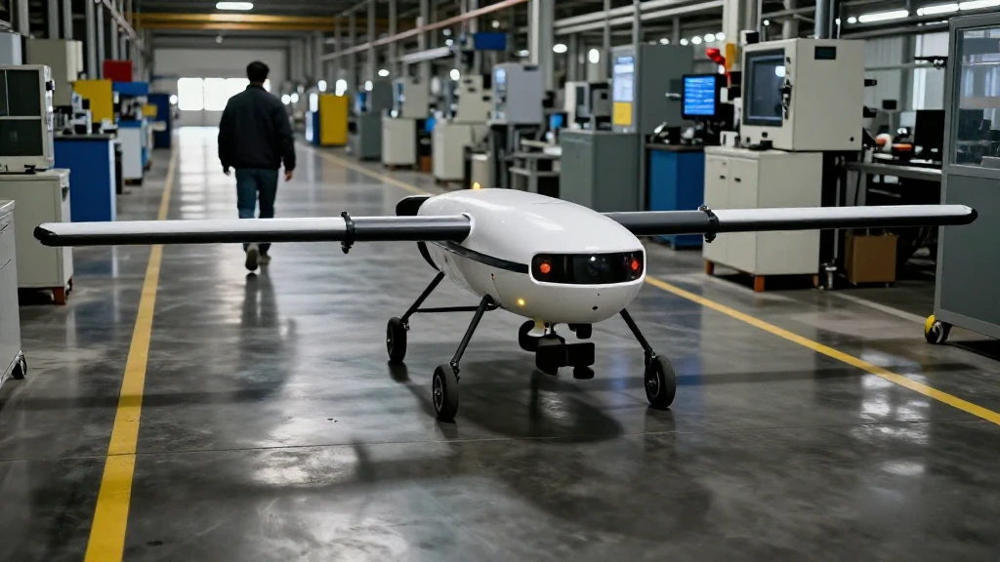

圖片由 AI輔助創作（Z-Image-Turbo）Image by AI (Z-Image-Turbo)
【鄭哥點評】欄目：鄭哥博客點評｜日期：2026-11-08
今日五條：廣州招商會42個項目、1974億，前三季新引進項目計劃投資3493億、同比增長149%；兩個「十五五」重點研發專項交落南沙；墨芯五個月兩輪、合共近20億；微靈醫療做腦機接口六年才超億元；易成一部無人搬運車賣40萬、半年營收1.19億。五條講同一件事：錢唔缺，缺嘅係交得出貨嘅人。

圖片由 AI輔助創作（Z-Image-Turbo）Image by AI (Z-Image-Turbo)
一、1974億簽約，同一個+20.6%
11月3至4日，2026粵港澳大灣區全球招商大會同第十二屆廣州國際投資年會在廣州開幕，上百家中外龍頭企業到場。大會從全省21個地市遴選42個代表性重大項目發布，投資額1974億元，覆蓋人工智能、高端裝備、算力數據等領域。省商務廳副廳長朱小軍講，前三季廣東實際使用外資891.7億元、增長14.1%。
廣州嘅數更貼地。市投資發展委員會辦公室專職副主任韓楨祥介紹，前三季全市新引進備案註冊項目超2200個，計劃投資3493億元、同比增長149%；招商項目累計完成固定資產投資同比增長20.6%。市裡另策劃35個重點產業集聚區項目，涵蓋集成電路、船舶與海洋工程等領域，預計帶動投資超8000億元；深圳加快服務業擴大開放試點，109條任務落地。我最想圈住嘅唔係1974億，係嗰個+20.6%——簽約額係願望，到位投資係事實。
來源：新華網《聚焦大灣區｜粵港澳大灣區推動外企投資釋放新活力》，2026-11-04｜https://www.news.cn/gangao/20261105/60627924f0a74390aed2fb7c5b1fb2d2/c.html

圖片由 AI輔助創作（Z-Image-Turbo）Image by AI (Z-Image-Turbo)
二、兩個「十五五」重點專項，交落南沙
10月31日至11月2日，2026大灣區科學論壇在粵港澳三地聯動舉辦，11月1日開幕式在廣州南沙舉行。開幕式發布粵港澳大灣區國際科技創新中心支持舉措，其中一項係支持大灣區建設世界一流重大科技基礎設施集群。
更值得留意嘅係：現場啟動兩項由廣東主責嘅「十五五」國家重點研發計劃重點專項——「先進生物治療技術」同「粵港澳大灣區國際科技創新中心」；另簽協同創新聯合資助計劃同中科院合作項目。「主責」兩個字好重：唔係來聽會、唔係掛名，係要出方案、交節點、過驗收。國家出題目，本地找答案——呢種錢最難拿，因為驗收嘅人唔係你自己。
來源：新華網《聚焦大灣區｜粵港澳三地聯動舉辦2026大灣區科學論壇》，2026-11-01｜https://www.news.cn/gangao/20261101/fccb08f2f63f465597e74ea4bc16b632/c.html
圖片由 AI輔助創作（Z-Image-Turbo）Image by AI (Z-Image-Turbo)
三、墨芯：五個月兩輪，加埋近20億
《科創板日報》11月3日報道，墨芯人工智能科技（深圳）完成近10億元人民幣C+輪融資，投資方包括仁愛資本、海棠基金等。資金用於稀疏專用推理芯片嘅軟硬件升級同下一代芯片預研。距上一輪近10億元只隔約五個月，兩輪累計近20億。
墨芯2018年成立，總部深圳，做AI推理芯片、計算卡同配套軟件，已推出搭載自研Antoum芯片嘅S4、S30、S40，年底前計劃推新一代SP200；6月起由賣卡延伸到算力系統交付。公司稱第三季營收數倍增長。推理芯片嘅門檻唔在單卡算力，在遷移成本——客戶簽單後第一句問：我啲模型搬得過去未？
來源：《科創板日報》敖瑾《AI推理芯片再獲大額融資 墨芯C+輪融了近10億元》，2026-11-03｜https://m.cls.cn/detail/2524290

圖片由 AI輔助創作（Z-Image-Turbo）Image by AI (Z-Image-Turbo)
四、微靈醫療：六年，超億元，一隻左手
21世紀商業評論11月3日報道：深圳醫療器械公司微靈醫療今年8月完成超億元融資，由君重資本領投，此前已獲高榕資本、生命園創投、鼎暉投資、力合科創等投資。創辦人李驍健教授研究腦科學二十多年，2018年回國，2019年成立公司，做植入式腦機接口。
今年6月，一名因腦幹出血導致閉鎖綜合徵嘅患者植入全植入式系統：術後約兩星期手指開始微動，之後可做組合手勢，經約三個月訓練，10月中旬開始練操作滑鼠。李驍健強調「修復」唔係「替代」——唔係外骨骼帶住隻手動，係病人自己控制自己隻手。六年先至超億元，好多人覺得慢；但醫療器械嘅時間表由病例決定，唔由融資節奏決定。
來源：21世紀商業評論韓璐《深圳腦科學教授，拿下億元融資》，2026-11-03｜https://www.21jingji.com/article/20261103/herald/6f7c409ff6f6b1e58e70344a61a2cea6.html

圖片由 AI輔助創作（Z-Image-Turbo）Image by AI (Z-Image-Turbo)
五、易成創新：40萬一部車，半年1.19億
《科創板日報》11月6日報道：深圳市易成自動駕駛技術有限公司完成2億元C輪融資，投資方包括粵科集團、善達投資、安徽國投、佛山創投等。資金用於擴大工廠產能同交付能力、推進世界模型研發同物理交互數據建設。
易成2017年成立，做工業無人轉運車，最暢銷嘅轉運車載重5至10噸、平均售價約40萬元。公司2026年上半年營收1.19億元（淮北市烈山區政府8月公布）；公司稱具身智能相關訂單規模已達數億元。現時年產能約3000輛，本輪後希望提到1萬輛，製造已伸到安徽阜陽同淮北。40萬一部、半年1.19億，唔上頭條，但銀行肯借、政府肯給地、客戶肯落單。
來源：《科創板日報》《工業無人車企易成創新C輪融2億 安徽國投出手》，2026-11-06（東方財富2026-11-07轉載）｜https://finance.eastmoney.com/a/202611073925234329.html

圖片由 AI輔助創作（Z-Image-Turbo）Image by AI (Z-Image-Turbo)
六、鄭哥點評
第一，今日三間深圳公司講嘅係同一件事：交付。墨芯交卡同算力系統，微靈交手術台同病歷，易成交車同調度。三種交付、三種估值：一個看遷移成本，一個看臨床證據，一個看噸位同交期。
第二，簽約額同到位投資係兩回事。1974億係紙上，+20.6%係地上。睇招商新聞我只睇第二個數——第一個由公關決定，第二個由推土機決定。
第三，兩個重點專項交落廣東，係長期訂單，唔係獎狀。題目國家出，經費分批落，中間要交節點、要驗收。做技術嘅人拿到呢種錢最實在。
一句到尾：今年廣深嘅錢，已經唔係投故事，係投交貨。你交得出，錢追你；交唔出，簽幾多億都同你無關。
圖片由 AI輔助創作（Z-Image-Turbo）Image by AI (Z-Image-Turbo)
\[Zheng Ge's Take\] Column: Zheng Ge's blog commentary | Date: 2026-11-08
Five items today: a Guangzhou investment fair published 42 projects worth 197.4 billion yuan, and the city's newly registered projects in the first three quarters carried 349.3 billion of planned investment, up 149%. The state handed Guangdong two national R&D programmes under the 15th Five-Year Plan. Moxin raised twice in five months, nearly 2 billion in total. Weiling spent six years to raise just over 100 million for brain-computer interfaces. Yicheng sells an industrial transporter for 400,000 yuan and booked 119 million in half-year revenue. All five say the same thing: money is not scarce; people who can deliver are.
圖片由 AI輔助創作（Z-Image-Turbo）Image by AI (Z-Image-Turbo)
1. 197.4 billion signed, and one 20.6% that matters
On 3 and 4 November the 2026 Greater Bay Area Global Investment Conference and the 12th Guangzhou International Investment Annual Meeting opened in Guangzhou, drawing more than a hundred Chinese and foreign industry leaders. The conference published 42 representative projects chosen from the province's 21 cities, worth 197.4 billion yuan, covering AI, high-end equipment, new energy storage, advanced materials and computing data. Zhu Xiaojun of the provincial commerce department said actual foreign investment in Guangdong reached 89.17 billion yuan in the first three quarters, up 14.1%.
Guangzhou's own numbers sit closer to the ground. Han Zhenxiang of the city's investment committee office said newly registered projects exceeded 2,200 with 349.3 billion of planned investment, up 149%, while fixed-asset investment actually completed by those projects rose 20.6%. The city also planned 35 industrial cluster projects across 14 fields, expected to leverage over 800 billion yuan; Shenzhen is pushing 109 pilot tasks to open its service sector. The figure I would circle is not the 197.4 billion but the 20.6%: a signed number is a wish, completed investment is a fact.
Source: 新華網《聚焦大灣區｜粵港澳大灣區推動外企投資釋放新活力》，2026-11-04 | https://www.news.cn/gangao/20261105/60627924f0a74390aed2fb7c5b1fb2d2/c.html
圖片由 AI輔助創作（Z-Image-Turbo）Image by AI (Z-Image-Turbo)
2. Two national programmes land in Nansha
From 31 October to 2 November the 2026 Greater Bay Area Science Forum ran across Guangdong, Hong Kong and Macao; the opening ceremony took place in Guangzhou's Nansha district on 1 November under the joint guidance of the Ministry of Science and Technology and the Chinese Academy of Sciences. It published support measures for the Greater Bay Area innovation centre, including backing for a world-class cluster of major scientific infrastructure.
More telling: two national key R&D programmes under the 15th Five-Year Plan were launched with Guangdong as lead party, one on advanced biotherapeutics and one on the Greater Bay Area innovation centre, alongside agreements on joint cross-border funding and major cooperation projects with the Chinese Academy of Sciences. The word 'lead' is heavy: not attending, not lending a name, but writing the plan, hitting milestones and passing acceptance. The state sets the question and the region finds the answer, which makes this the hardest money to take — the examiner is not you.
Source: 新華網《聚焦大灣區｜粵港澳三地聯動舉辦2026大灣區科學論壇》，2026-11-01 | https://www.news.cn/gangao/20261101/fccb08f2f63f465597e74ea4bc16b632/c.html
圖片由 AI輔助創作（Z-Image-Turbo）Image by AI (Z-Image-Turbo)
3. Moxin: two rounds in five months, nearly 2 billion
The STAR Market Daily reported on 3 November that Shenzhen-based Moxin AI closed a C+ round of nearly 1 billion yuan, with investors including Renai Capital, Haitang Fund, Dongheng Petroleum and Biqiu Capital. The money funds software and hardware upgrades for sparse inference chips and next-generation research. Only about five months separated it from the previous round of nearly 1 billion, taking the total to almost 2 billion.
Founded in 2018, Moxin builds inference chips, accelerator cards and software, shipping S4, S30 and S40 cards on its own Antoum chip and planning an SP200 before year-end. Since June it has moved from selling cards to delivering computing systems with local governments and computing centres. Third-quarter revenue grew several-fold, the company says, without disclosing the amount or the base. The barrier in inference chips is not peak throughput but migration cost: the first question a customer asks is whether their models will move.
Source: 《科創板日報》敖瑾《AI推理芯片再獲大額融資 墨芯C+輪融了近10億元》，2026-11-03 | https://m.cls.cn/detail/2524290
圖片由 AI輔助創作（Z-Image-Turbo）Image by AI (Z-Image-Turbo)
4. Weiling: six years, 100 million, one left hand
21st Century Business Review reported on 3 November that Shenzhen device maker Weiling raised over 100 million yuan in August, led by Junzhong Capital, after earlier backing from Gaorong Capital, Life Park Ventures, CDH Investments and Leaguer Capital. Founder Li Xiaojian has spent more than twenty years in brain science, returned to China in 2018 and founded the company in 2019 to build implantable brain-computer interfaces.
In June a patient left locked in by a brainstem haemorrhage received a fully implantable system; within about two weeks his fingers began to twitch, then came independent gestures and wrist lifting, and after roughly three months he began practising with a mouse in mid-October. Li insists this is repair, not replacement: no exoskeleton moving the hand, but the patient controlling his own. Six years to 100 million looks slow, yet a device's timetable is set by cases, not by funding rounds.
Source: 21世紀商業評論韓璐《深圳腦科學教授，拿下億元融資》，2026-11-03 | https://www.21jingji.com/article/20261103/herald/6f7c409ff6f6b1e58e70344a61a2cea6.html
圖片由 AI輔助創作（Z-Image-Turbo）Image by AI (Z-Image-Turbo)
5. Yicheng: a 400,000-yuan vehicle, 119 million in six months
The STAR Market Daily reported on 6 November that Shenzhen Yicheng Autonomous Driving Technology closed a 200 million yuan C round with investors including Yueke Group, Shanda Capital, Anhui Guotou and Foshan Venture Capital, money going to plant capacity, delivery capability, world-model research and physical interaction data.
Founded in 2017, Yicheng builds industrial transfer vehicles, shuttles and drive-by-wire chassis; its best seller carries 5 to 10 tonnes at an average price of about 400,000 yuan. Lieshan district in Huaibei, Anhui, said in August that revenue reached 119 million yuan in the first half of 2026, while the company claims embodied-AI orders of several hundred million. Capacity is about 3,000 vehicles a year and it wants 10,000 after this round, with manufacturing already extended to Fuyang and Huaibei. A 400,000-yuan vehicle and 119 million in half a year will not make headlines, but banks lend on it, governments grant land on it and customers order on it.
Source: 《科創板日報》《工業無人車企易成創新C輪融2億 安徽國投出手》，2026-11-06（東方財富2026-11-07轉載） | https://finance.eastmoney.com/a/202611073925234329.html
圖片由 AI輔助創作（Z-Image-Turbo）Image by AI (Z-Image-Turbo)
6. Zheng Ge's Take
First, three Shenzhen companies today tell one story: delivery. Moxin delivers cards and computing systems, Weiling delivers an operating table and patient records, Yicheng delivers vehicles and dispatch. Three kinds of delivery, three kinds of valuation: migration cost, clinical evidence, and tonnage with lead time.
Second, signed value and completed investment are not the same thing. The 197.4 billion is on paper; the 20.6% is in the ground. I only read the second number — the first is set by communications departments, the second by bulldozers.
Third, the two national programmes are long-term orders, not certificates. The state sets the question, funding arrives in tranches, and milestones and acceptance sit in between. For people who build technology this money is solid; for people who only write proposals it is the hardest to take.
Bottom line: money in Guangzhou and Shenzhen this year is no longer betting on stories but on delivery. Deliver and money follows; fail to deliver and however many billions get signed has nothing to do with you.